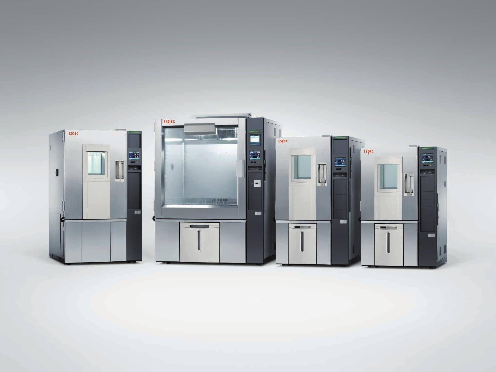

필요한 만큼만 냉각합니다
0°C 이하 운전에서 냉각 능력을 줄여 표준 J 시리즈 대비 전력을 최대 70% 아낍니다. 며칠씩 이어지는 시험일수록 차이가 커집니다.
ESPEC Platinous J ECO 시스템
배터리 충방전처럼 며칠씩 이어지는 시험은 전기를 가장 많이 씁니다. Platinous J ECO는 0°C 이하 운전에서 표준 J 시리즈보다 전력을 덜 쓰도록 만든 ESPEC의 대표 시리즈입니다.
70%는 0°C 이하 운전, 표준 J 시리즈 대비, PL-4J-ECO 기준 값입니다. 출처: ESPEC 카탈로그 E15110-Q2504

ECO 형 PL-2J-ECO / 3J-ECO / 4J-ECO 기준. 일부 모델 사양은 [확인 필요]
같은 제어 방식 위에 온도 범위와 용도별 모델이 이어집니다. 내용적은 120L부터 800L까지, 요청 시 816L와 1000L도 제작합니다.

| 구분 | 모델 | 온도 범위 | 습도 | 내용적 |
|---|---|---|---|---|
| 초에너지절약 저온 (ECO) | PL-2J-ECO, 3J-ECO, 4J-ECO | -40 ~ +100°C | 20 ~ 98%rh | Type2 225L 등 |
| 항온항습기 | PR-1J ~ 4J | -20 ~ +100°C | 20 ~ 98%rh | 120L ~ 800L |
| 저온 | PL-1J ~ 4J | -40 ~ +100°C | 20 ~ 98%rh | Type1 ~ 4 |
| 초저온 | PSL-2J, 4J | -70 ~ +100°C | 20 ~ 98%rh | 306L, 800L |
| 고온 | PHP-2J, 3J, 4J | 주위온도 +10 ~ +100°C | 40 ~ 98%rh | 219L, 398L, 784L |
| 클린 (Class5, HEPA) | PCR-3J | -20 ~ +100°C | 30 ~ 90%rh | 312L |
옵션으로 +150°C, +180°C까지 확장할 수 있고(모델별 상이), 요청 시 최대 200°C입니다.
어려운 말을 빼면 원리는 세 가지입니다.
0°C 이하 운전에서 냉각 능력을 줄여 표준 J 시리즈 대비 전력을 최대 70% 아낍니다. 며칠씩 이어지는 시험일수록 차이가 커집니다.
Smart R&D System은 냉각과 가열 능력을 필요한 만큼만 제어해 온도와 습도를 정밀하게 맞춥니다. (일본 특허 5514787)
저 GWP 냉매 R-449A는 R-404A(GWP 3920)를 1397로 낮춥니다. 약 64% 감소이며 요청 시 선택합니다.
폭넓은 신뢰성 시험을 한 시리즈로 맡는 ESPEC의 대표 항온항습기입니다.
충방전을 반복하는 장시간 시험. ECO 형이 가장 효과를 내는 용도입니다.
-70°C부터 +100°C, 20 ~ 98%rh 범위에서 부품과 제품을 시험합니다.
정해진 조건을 오래 유지하며 변화를 봅니다.
온도와 습도에 따라 제품 성능이 어떻게 달라지는지 확인합니다.
제이에스 엔지니어링은 1981년부터 ESPEC 환경시험기를 국내에 공급해 온 한국 단독 총대리점입니다. 매년 일본 ESPEC 기술진이 방문해 A/S 기술을 함께 나누고, 직원은 정기적으로 일본에서 연수를 받습니다.
온도 범위, 시험품 크기, 시험 기간 세 가지면 시작할 수 있습니다.